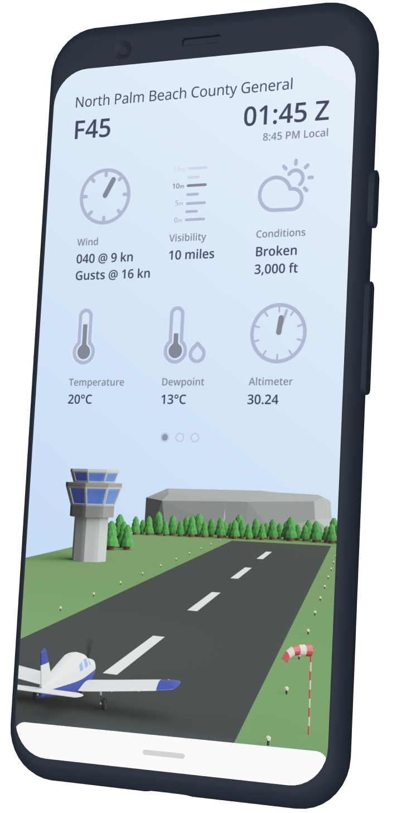

Jonny Girvan
UX | Product Designer
I am a designer focused on delivering tailored, easy to use and innovative solutions to business problems. I enjoy figuring out how to make design effective at scale so that user focused design becomes a part of the product development cycle.
View resumé View work
